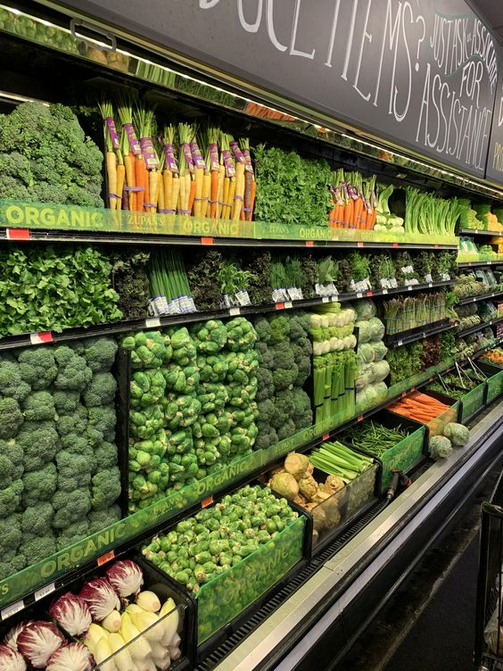

Desafio 1: #7DaysOfCode Lógica JS - DIA 1

#7DaysOfCode Lógica JS - DIA 1
Desafio:Reescrever o código para que faça sentido as comparações demandadas.
Resultado no Console:
As variáveis numeroUm e stringUm têm o mesmo valor, mas tipos diferentes.
As variáveis numeroTrinta e stringTrinta não têm o mesmo tipo.
As variáveis numeroDez e stringDez têm o mesmo valor, mas tipos diferentes.
Ver Projeto
Desafio 2: #7DaysOfCode Lógica JS - DIA 2

#7DaysOfCode Lógica JS - DIA 2
Desafio:Desenvolver um programa que faça 3 perguntas ao usuário:
Resultado:Qual o seu nome?
Quantos anos você tem?
Qual linguagem de programação você está estudando?
Gere como resposta:"Olá [nome], você tem [idade] anos e já está aprendendo [linguagem]!"
Ver ProjetoDesafio 3: #7DaysOfCode Lógica JS - DIA 3

#7DaysOfCode Lógica JS - DIA 3
Desafio:O desafio de hoje é criar os destinos possíveis de um jogo, em que o usuário consiga escolher:
Se quer seguir para a área de Front-End ou seguir para a área de Back-End.
Front-End:
- Aprender React
- Aprender Vue
Back-End:
- Aprender C#
- Aprender Java
Depois, independente das escolhas anteriores, o usuário poderá escolher entre seguir se especializando na área escolhida ou seguir se desenvolvendo para se tornar Fullstack. Você deve exibir na tela uma mensagem específica para cada escolha.
Por fim, pergunte quais são as tecnologias nas quais a pessoa gostaria de se especializar ou de conhecer. Aqui, a pessoa pode responder N tecnologias, uma de cada vez. Então, enquanto ela continuar respondendo "ok" para a pergunta: "Tem mais alguma tecnologia que você gostaria de aprender?", continue apresentando para ela o Prompt, para que ela complete o nome da tecnologia em questão. E, logo depois, apresente uma mensagem comentando algo sobre a linguagem inserida.
O importante é que a pessoa que estiver jogando possa sempre escolher qual decisão tomar para conseguir aprender e se desenvolver na área de programação.
Além disso, também é essencial que, ao final do jogo, ela possa inserir quantas tecnologias quiser na lista de aprendizado.
Ver ProjetoDesafio 4: #7DaysOfCode Lógica JS - DIA 4

#7DaysOfCode Lógica JS - DIA 4
Desafio:Desenvolver um programa semelhante a um
Criar um programinha que comece com um valor específico pré-definido entre 0 a 10 para o número que você vai adivinhar (7, por exemplo).
Em seguida, o programa vai perguntar para você qual o valor que você deseja chutar e, caso você acerte, ele irá te parabenizar. Caso erre, ele vai te dar mais 2 tentativas.
No fim, caso você não acerte nenhuma vez, ele vai imprimir qual era o número inicial.
Depois que o programinha estiver funcionando, tente usar um número randômico em vez de um número pré-definido.
Ver ProjetoDesafio 5: #7DaysOfCode Lógica JS - DIA 5
#7DaysOfCode Lógica JS - DIA 5
Desafio:Desenvolver um programa semelhante a uma
Perguntará se você deseja adicionar uma comida na sua lista de compras, e você deve poder responder com sim ou não.
Em seguida, o programa vai perguntar para você qual o valor que você deseja chutar e, caso você acerte, ele irá te parabenizar. Caso erre, ele vai te dar mais 2 tentativas.
Em seguida, ele perguntará qual comida você deseja inserir, e você digitará o nome dela, como por exemplo batata.
Depois que o programinha estiver funcionando, tente usar um número randômico em vez de um número pré-definido.
Depois, ele deverá perguntar em qual categoria essa comida se encaixa, com algumas opções já pré-definidas.
Por fim, caso você não queira mais adicionar nada na lista de compras e responder não na primeira pergunta, ele irá exibir uma lista com todos os itens agrupados.
Ver Projeto